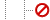

Define header and DMIS startup information
In combination with CAD-related programs such as PMI, CMM Inspection Programming generates code output for use on a wide variety of Dimensional Measurement Equipment (DME). The equipment then uses that information to output not only dimensional measurement data but also report information.
CMM Command lets you add your own code to a program when needed. In this activity, you will set up basic header information and add start up commands using the Dimensional Measuring Interface Standard (DMIS).
-
On the Insert toolbar, click CMM Command .
-
In the Insert Command dialog box, from the Command Type list, select Program Header.
-
From the Name Method list, select User Specified, and in the Part Name box, type 4HOLE_PMI.
-
From the Revision Method list, select User Specified, and in the Part Revision box, type A.
-
From the Temperature Units list, select Centigrade.
-
In the Operation Name box, type PART_HDR_INFO, and then click OK.
In the Inspection Navigator, the new header information appears.

PROGRAM_HEADER

PART_HDR_INFO
-
On the Insert toolbar, click CMM Command again.
-
From this document, copy the following DMIS startup commands.
-
Click this step.
-
Drag across the commands below to highlight them.
R(dt)=REPORT/DATE,TIME R(ag)=REPORT/ALGOR R(tc)=REPORT/TEMPC OUTPUT/R(dt) OUTPUT/R(ag) OUTPUT/R(tc) PRCOMP/ON SNSET/APPRCH,6.000000 SNSET/RETRCT,8.000000 SNSET/SEARCH,25.000000 SNSET/DEPTH, 10.00000
-
Right-click the selection and choose Copy.
-
-
In the Insert Command dialog box, right-click the Program Statements list and choose Paste.
-
In the Operation Name box, type STARTUP_CMDS, and click OK.
In the Inspection Navigator, in the PROGRAM_HEADER program group, the new startup statement appears below the first command.
PROGRAM_HEADER
PART_HDR_INFO
STARTUP_CMDS
-
In the Inspection Navigator, right-click CMM_PROGRAM and choose Generate.
-
In the Generate Tool Path dialog box, click Accept Paths.
-
Right-click CMM_PROGRAM again and choose Post Process.
-
In the Postprocess dialog box, in the Postprocessor group, select DMIS 5.2, and then click OK.
An Information window displays DMIS output for the entire program. The header output will affect the DME’s output when the program is run on an actual CMM as described.
-
Close the Information window and save your inspection setup file.
Startup information is now complete.